Charles IX Court Garb from 1572
Part 1 - Planning, Experimentation, & Materials
One of the challenges I often face when making garb for myself is that I am not particularly creative. While I am somewhat competent at reproducing something, I struggle to get even as creative as where to place the slashes on a doublet. As such I frequently lean towards searching through historical images for elements I want to incorporate. Sadly, many of the portraits from period are from high nobility and are extraordinarily complex making them hard to reproduce.
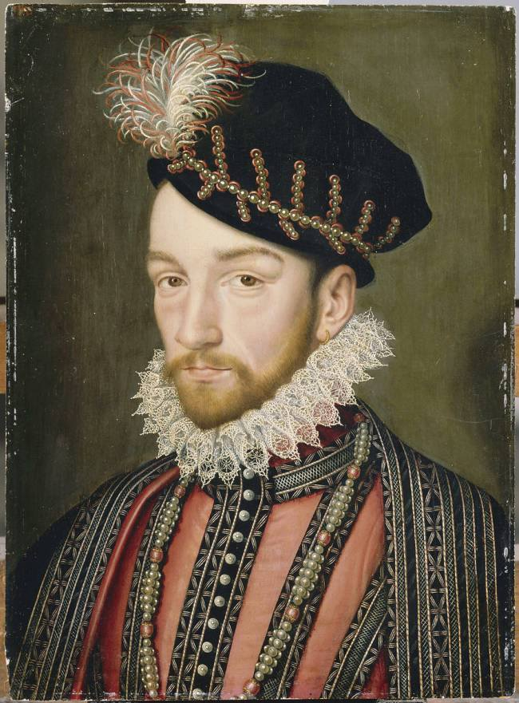But in late 2017 I was laid off from my job and suddenly found myself with a large amount of free time on my hands. So I decided it was time to really dive into a project and start something elaborate, and to do it entirely by hand. The portrait that struck me the most was the one shown here which is a portrait of Charles IX of Spain from 1572. I really liked the geometrical embroidered pattern and since I had been experimenting with embroidery, I decided to start on this.
{kind=link}
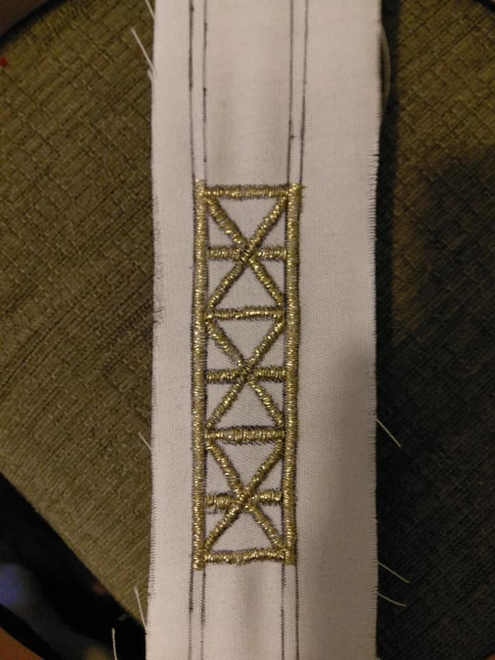The first image I found was lower resolution and it wasn't initially clear how the patterns were constructed. As such, I began with some experimentation. Initially I thought that it was a solid pattern. So my first attempt was to reproduce it in that manner. While this worked, to get good coverage was extremely time consuming. The piece shown here took the better part of a full day. In addition, it looks better on this piece of scrap canvas than it did on velvet. This was due to the thread disappearing into the nap of the velvet. This was clearly problematic but, as we'll see later, I was able to overcome it in two separate respects.
{kind=link}
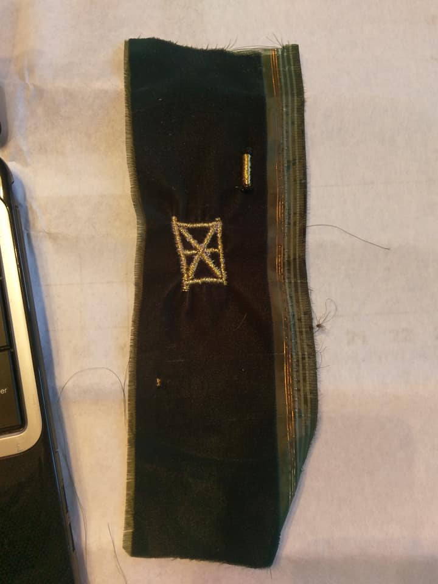Worse, it seemed that the embroider caused to velvet to pucker. This may have been partially due to using only a thin strip of velvet so it didn't have tension along the horizontal. Either way, this wasn't going to work. Consulting with someone with more experience, they suggested several methods of alleviating this problem. The best one seemed to be to do this on a tear away interfacing and then apply that on top of the velvet as an applique. I tried that as well, but due to the tiny triangles, this proved unfeasible as well.
{kind=link}
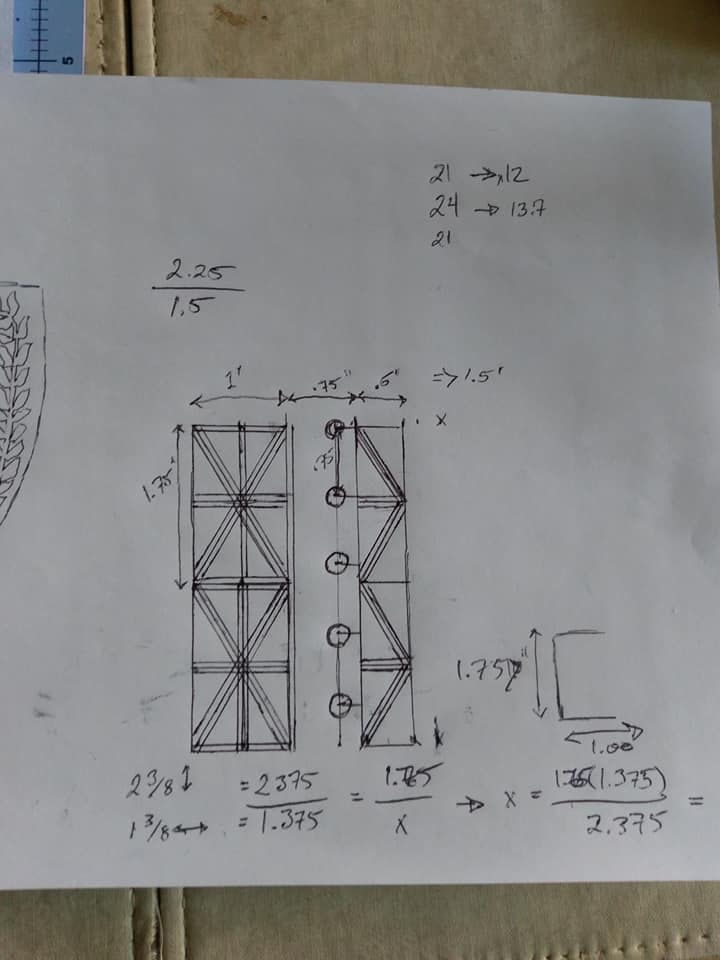Fortunately, I then found a higher resolution source image and discovered that the pattern wasn't solid and was in fact several parallel lines. This was fortunate for several reasons: it would require far less thread than my original plan and be far faster. Previously each box took about 4-5 hours to get good coverage. It didn't solve the problem of the thread disappearing into the nap, but it was a start. As such, I sat down to work out the geometry. Shown at left here is a diagram for the pieces in the center of the doublet. To determine the proper proportions, I measured the ratio of height and width of the source image directly from my monitor (greatly enlarged). I then counted the number of "boxes" shown in the original image and estimated how long that would be on my own body to go as far down my chest as the portrait did. The numbers came out very close to 1.75" tall and 1" wide for the boxes on the left. As such, I used these figures as my baseline.
{kind=link}
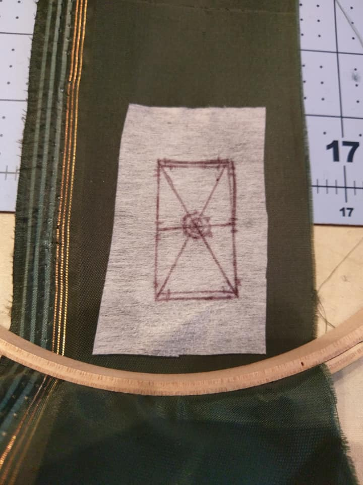To solve the issue of the thread disappearing into the nap, I tried braiding three of the threads together. This worked well and stood out well against the velvet. However, puckering remained a problem. To solve that I used a double sided interfacing to attach a heavy canvas to the reverse. While this solved the issue well, it became nearly impossible to get the needle through. Finally I found a good balance of using a medium weight single sided fusible interfacing.
{kind=link}
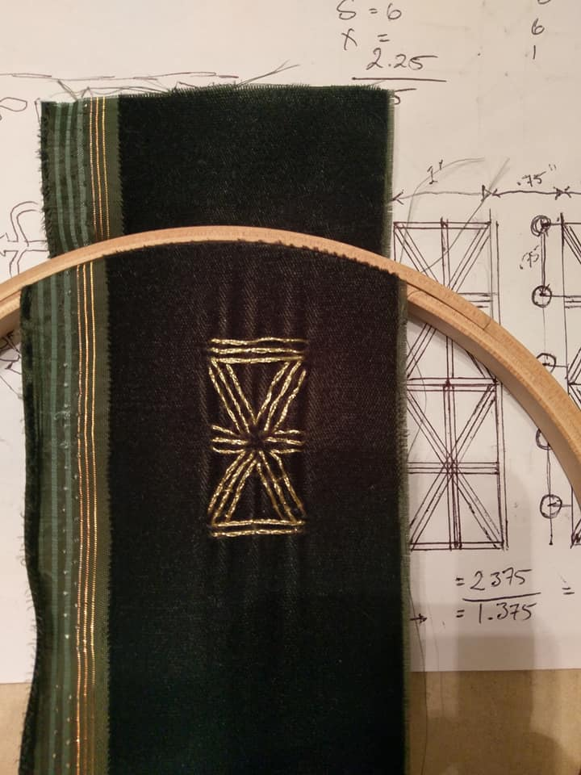This also worked well since this prevented puckering to a good degree (and I hoped the rest would be solved by using fabric that took up the full width of the hoop to create horizontal tension) and also provided an excellent surface to draw the pattern on. While I had used a dark green velvet for my experimentation since I had that laying about, I wanted to go with black for the final product which would mean it would be quite difficult to draw directly on the fabric.
{kind=link}
Throughout these various experiments with the parallel lines, I did notice that the braid in the threads tended to cause the thread to twist slightly. While not a large issue, when making tight turns to make the parallel lines, this would cause the thread to lay differently in different lines causing them to not be spaced as well as I'd hoped. As such, I added couching stitches to help position them and keep them parallel which can be seen if you look closely in the image to the left. You may also note that the vertical line down the center isn't present. This is because the source image seems to show this as a thicker, solid cord which would also be couched. My original plan for this was to use cord that I'd had laying about that was black and then cover it with the thread. However, if you look at one of the previous images, you can see an experiment I did with this. Not only did this take an excessive amount of time, but the cord was also too thick at 3mm. As such, I planned to find a matching gold cord that I could use directly.
Part 2 - Trim Construction
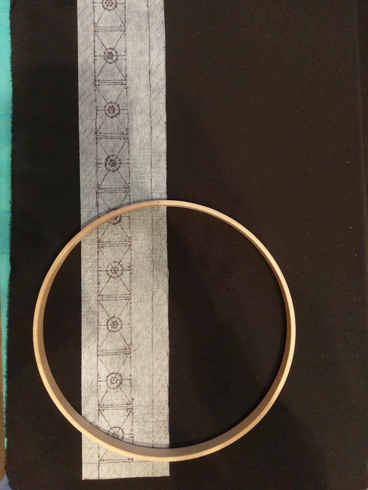With a working plan in mind, I set to work producing the full set of trim. When I went to JoAnn's to purchase the velvet, I found a higher quality black with a shorter nap which is what I ended up using. I drew out the repeating pattern on the interfacing and fused it to the velvet. You'll also note in this image and the previous one showing the pattern on the back, the geometry that I use to guide my stitches. Each repetition begins and ends with three horizontal lines. I consider the middle one being shared between the two to either side and use that as the base. From there, the lines to either side are 1/16" away. I then draw the horizontal line that marks the center and then connect the corners. Two concentric circles are drawn around that center. The inner one will be the point to which the center of the three lines will go while the outer marks the outer lines. I also have marks on the edges that are 1/8" away from those center line which will be where the parallel threads come through as that gives the look I sought. To attempt to correct the puckering I used the full width of the hoop and quickly noted that there was a lot of wasted fabric, so I also added the other side of the front trim to help utilize the space (not shown).
{kind=link}
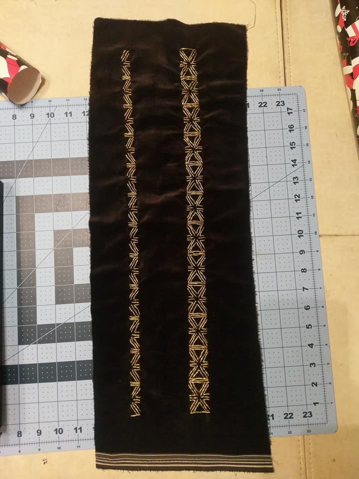Many hours later this was the result. I estimated that the boxes with the full X shape each took about 2 hours. This includes the time for braiding the thread, placing the stitches, and couching them. Likewise, the half boxes took about an hour each.
{kind=link}
As a side note, I did much of this work while watching The Walking Dead. At this point, I'd finished all 7 seasons that Netflix had which is 99 episodes or approximately 75 hours.
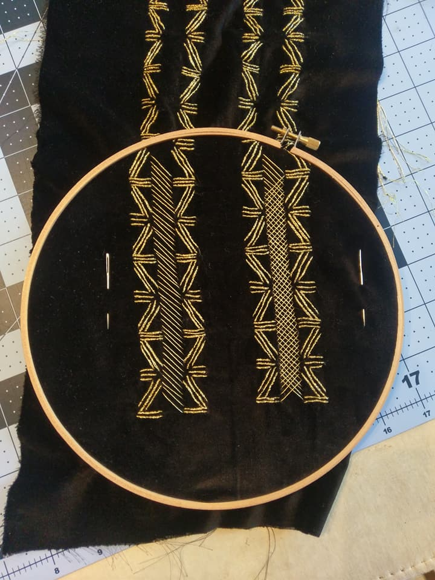The pattern needed to be adjusted slightly for the trim to either side as there was a break down the center with a cross hatched pattern down it. The result that it was two of the half boxes, mirrored. Again this was traced onto the interfacing and away I went. Once that was complete I started on the cross hatching. Initially my plan was to do all the threads one direction, then do them in to other and then couch them as necessary. However, when I tried this, the threads naturally laid differently and as such, caught the light differently. It wasn't a pleasing effect. So I tried weaving the second direction through the first one (over-under-over...). This worked beautifully. Not only did it cause the light to catch in a more consistent way, but the threads also then managed each other, keeping them down (thus reducing the need for couching) and helping to maintain the spacing.
{kind=link}
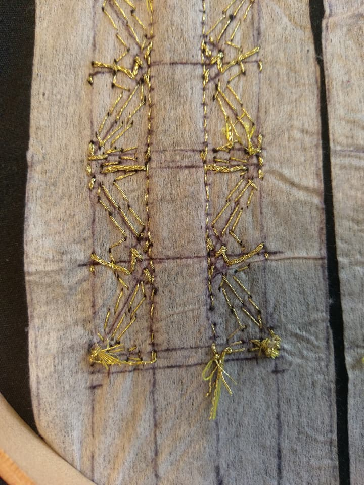Previously my methodology was to complete one full side before the other. However, the constant removing the cloth from the hoop and placing it back in has begun to cause the interfacing on the reverse to degrade. As such, I began working on both sides simultaneously to minimize further degradation.
{kind=link}
Since I know people like pictures of the reverse of things, here's what this looks like so far. Most of the thread on the reverse is from the couching stitches. Going horizontally, we can see the short stitches for the cross-hatched pattern and here and there we can see the braided threads.
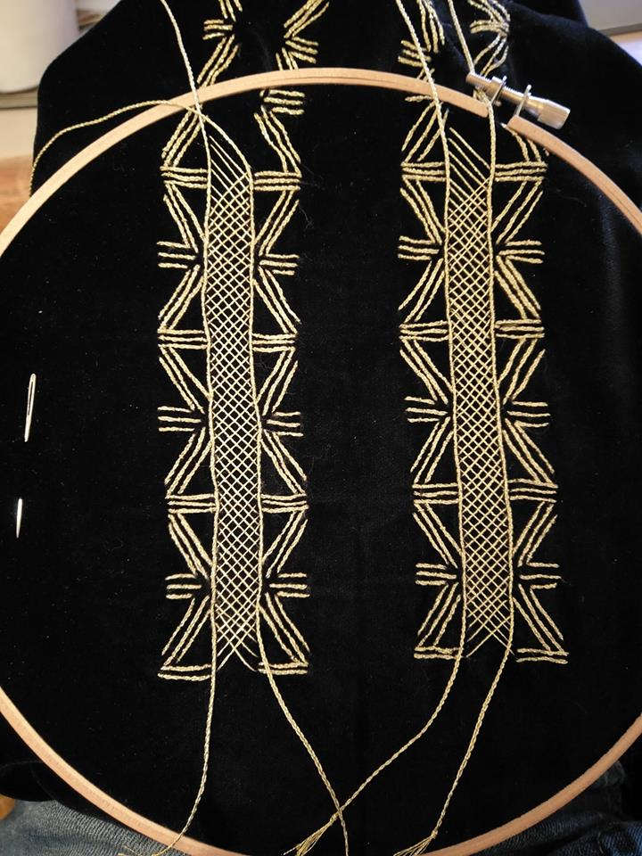After a good deal of looking, I finally found a thicker cord for the vertical lines. It was an elastic metallic cord, but it was just the right width and had a good matching color to the DMC thread. Unfortunately, it had very little give which meant the couching stitches really stood out atop them; it couldn't pull into it at all. So instead of wasting more time trying to find something that world work better, I decided to carry on using the same braided three strands of thread as I'd used elsewhere. In the image to the right, you can see that the lines aren't perfectly horizontal. I'm hoping that this is due to the uneven tension in the hoop, and that will correct itself when it is removed. The horizontal cords were couched through the same holes as where the cross hatched patterns ended, so it is secured every 1/8".
{kind=link}
You may notice that I did leave some extra length at the bottom. The reason for this is that I wanted to ensure that the total length would be sufficient. When I first conceptualized this whole project, my original intent was to use the red velvet from an old doublet I deconstructed, but the scars from old trim made this somewhat unfeasible. Regardless, I used the measurements from the old doublet which came from a Simplicity pattern. The modern patterns place the waist at the modern level whereas, in period, the waistline was higher, at the "natural" waist where we actually bend. As such, it's quite likely that the length I planned out here is already plenty generous, but weird things happen sometimes and since I'm not entirely settled on the at which it will be positioned, this may change things as well. As such, should it become necessary to add an additional piece to the pattern at the bottom, I did have extra room left to do so, as you can see in the previous picture of the reverse.
At this point, things started becoming a bit messy as well. From the last picture you can easily see that there's 4 cords running loose on the front. Similarly, the cross hatched patterns each take two threads, plus the couching threads, means there's a total of 8 threads running loose on the back as well. I have to frequently double check that I haven't accidentally caught any of them up as I'm working on other pieces.
Time since my last update on watching progress: 44 Episodes of Star Trek: Voyager (approximately 33 hours) although there has been a fair amount of time I worked not with anything on in the background. Overall, probably at around 200 hours total